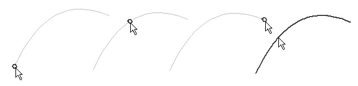

Connect sketch elements with a BlueDot
-
Choose Surfacing tab→Surfaces group→BlueDot
 .
. -
Select a keypoint on the first element.
-
Select a keypoint on the second element.
Note:The first curve moves to intersect the second curve. Also, the shape and location of the first curve may change, but the second curve maintains its initial shape and location.
-
Each curve has four select zones: two endpoints, a midpoint and the curve itself.

-
You can also use a BlueDot to connect elements at a point along the elements.
-
You can edit the position of a BlueDot using the Select Tool and the BlueDot Edit command bar.
-
You can use the OrientXpres tool to limit the edit to be parallel an axis or plane you select.
-
When using the BlueDot command in Wire Harness, you can connect the end point of more than two harness elements.
How do I
Insert sketches into a BlueSurfAdding cross sections into a BlueSurf (ordered modeling)
Construct a BlueSurf feature
Learn more
BlueSurf overviewEnd Conditions
Cross sections
Look up more details
BlueSurf commandBlueSurf command bar
BlueSurf Options dialog box
BlueDot command (ordered modeling)
BlueDot Edit command bar (ordered modeling)
Hide All BlueDots command (ordered modeling environment)